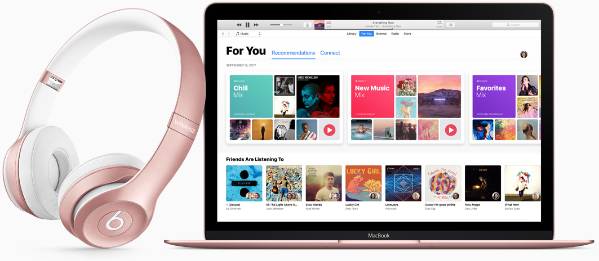
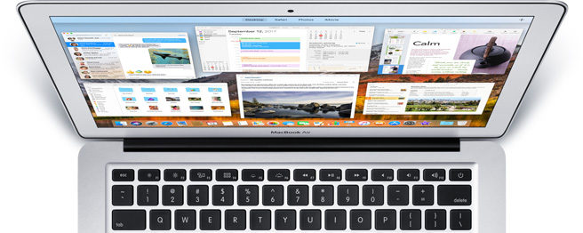
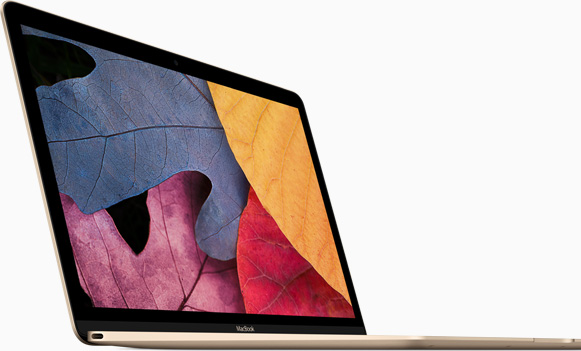
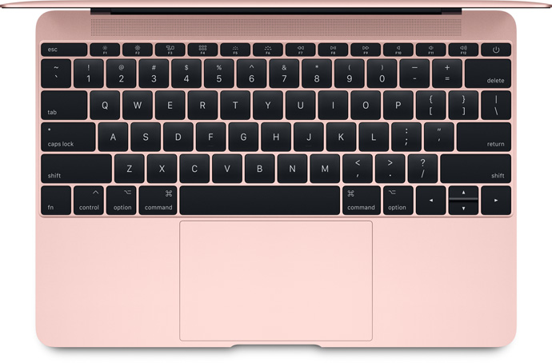
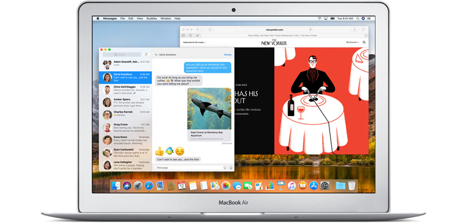

Com o MacBook, nós decidimos fazer o impossível: oferecer uma experiência completa no notebook Mac mais fino e leve até hoje. Além de compacto, ele está mais poderoso que nunca. O desempenho é até 20% mais rápido, graças aos novos processadores Intel Core m3, i5 e i7 de sétima geração1 e ao armazenamento SSD até 50% mais veloz2.

Aprenda, jogue, navegue e crie. O macbook tem uma tela incrível, desempenho espetacular e muitos apps para você fazer o que quiser. É prático. É fácil. É mágico.


Para oferecer a incrível experiência da tela Retina, redesenhamos todos os pixels e criamos uma abertura maior, que deixa mais luz passar. Isso nos permitiu usar a retroiluminação em LED, que alcança o mesmo nível de brilho com menor consumo de energia.
Mecanismo borboleta aprimorado.
Superior de A a Z.
Com nosso mecanismo borboleta de segunda geração, digitar ficou muito mais confortável e ágil. Quando você pressiona as teclas, elas descem e sobem com movimentos rápidos. Você não vai querer parar de digitar.


Multi-Touch.
Um toque de precisão e controle.
Clique e continue pressionando o trackpad para habilitar novas funções, como buscar o significado de uma nova palavra ou pré-visualizar um arquivo no Finder. E, com um toque mais forte sobre uma data no corpo de um e-mail, crie um evento no Calendário.
USB-C. Um por todos, todos por um.
A porta USB-C reúne tudo que você precisa em um só lugar. Ela serve para carregar, transferir dados com a mesma velocidade da porta USB (até 5 Gb/s) e ainda funciona como saída de vídeo. Tudo isso em um design reversível, com um terço do tamanho de uma USB 3, com flexibilidade para conectar facilmente seus dispositivos favoritos.